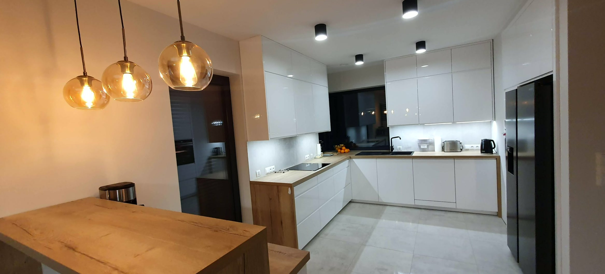
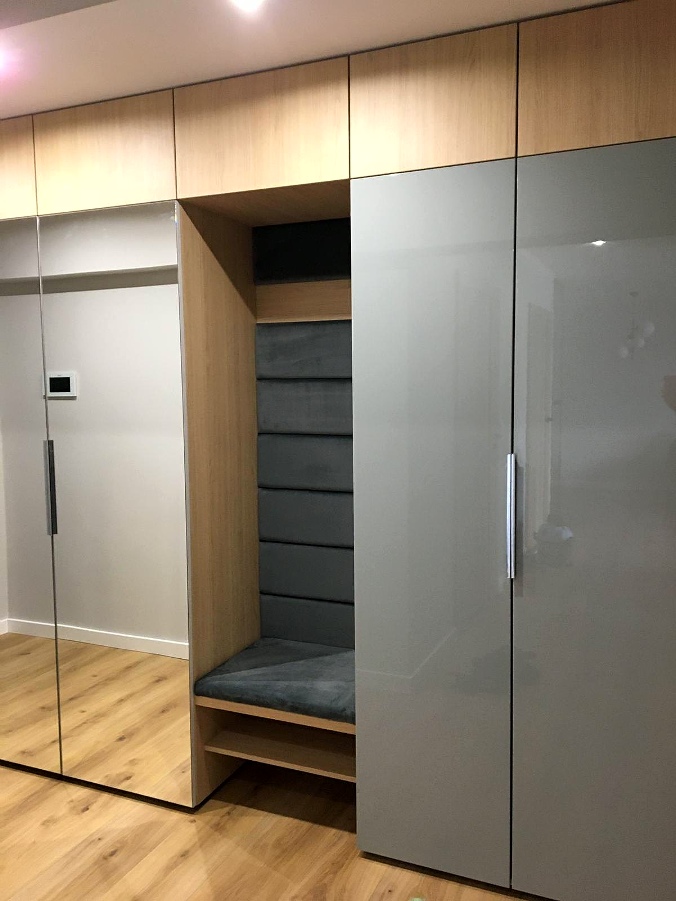
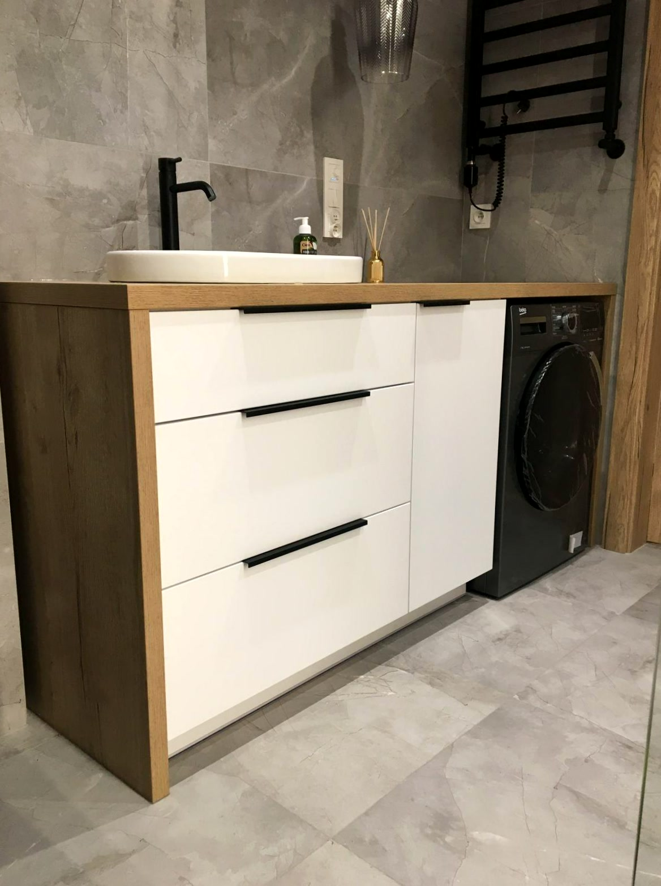
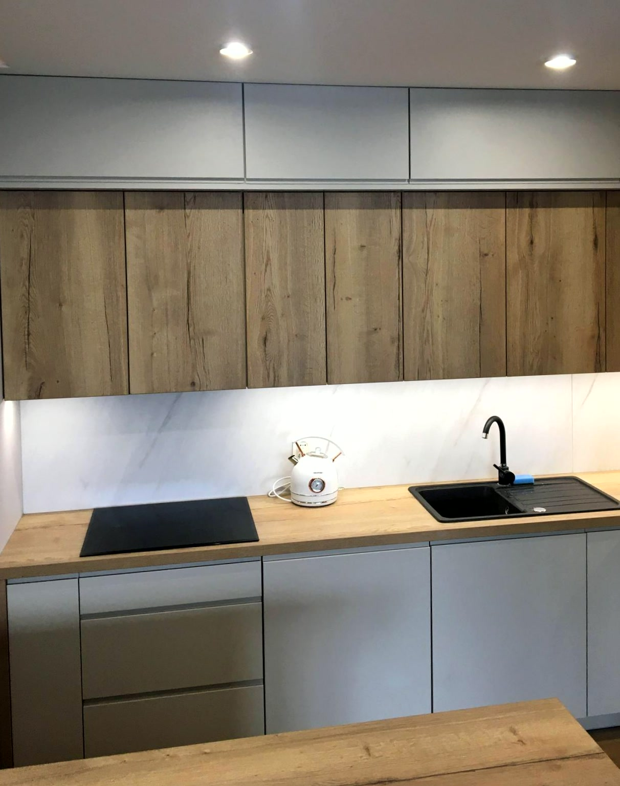
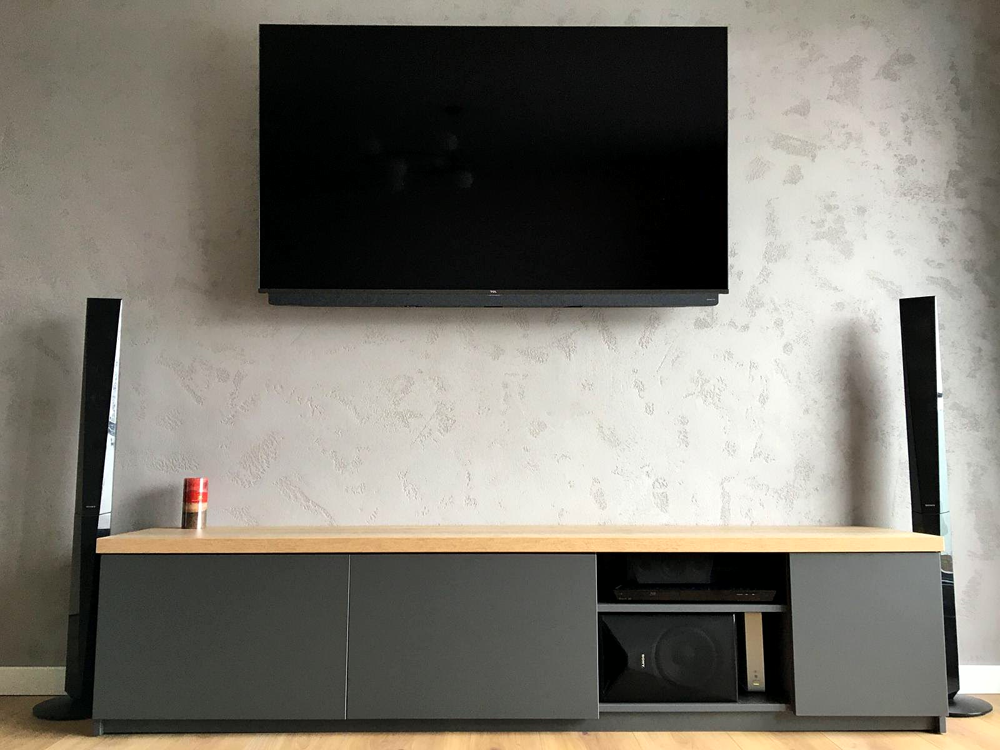

Kuchnie na wymiar →
Z barkiem, w literę L albo U, w bieli, granacie czy czerni - zawsze pod wymiar Twojego pomieszczenia.
Pracownia mebli · Zabrze
Sama płyta i zawiasy to za mało. Kuchnia czy szafa na wymiar wymaga dokładnego pomiaru, projektu pod Twoje wnętrze i porządnego montażu. Tak pracujemy w Stolbelk.
Zapytaj o wycenę
Co robimy
Stolbelk to pracownia mebli na wymiar z Zabrza. Projektujemy, produkujemy i montujemy kuchnie, szafy, szafki RTV i meble łazienkowe, a w starszych kuchniach wymieniamy same fronty. Najwięcej czasu dajemy pomiarowi i projektowi, bo tam widać krzywą ścianę i nierówną wnękę, zanim ruszy piła. Klienci wystawili nam w Google średnią ocenę 4,7 przy 42 opiniach.
Oferta
Z barkiem, w literę L albo U, w bieli, granacie czy czerni - zawsze pod wymiar Twojego pomieszczenia.

Do przedpokoju, sypialni albo we wnękę, z lustrem lub bez.

Szafki pod umywalkę i obok pralki, z materiałów, które znoszą wilgoć.

Nowy wygląd starej kuchni bez rozbierania całej zabudowy.

Zanim cokolwiek wytniemy, widzisz gotowy projekt na swoich wymiarach.
„Zleciliśmy wykonanie kuchni na wymiar, szafki rtv, szafki łazienkowej oraz szafy na wymiar. Jesteśmy bardzo zadowoleni z realizacji. Wszystko na czas, bardzo dokładnie wykonane, bardzo dobrej jakości.”
